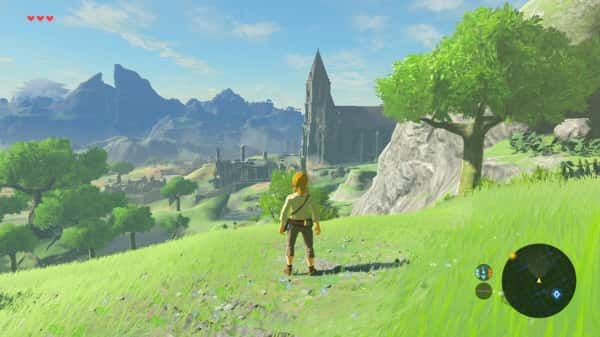
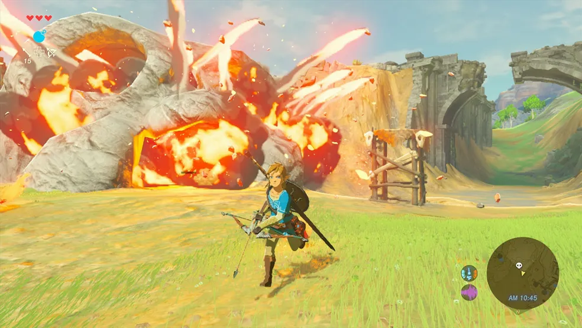
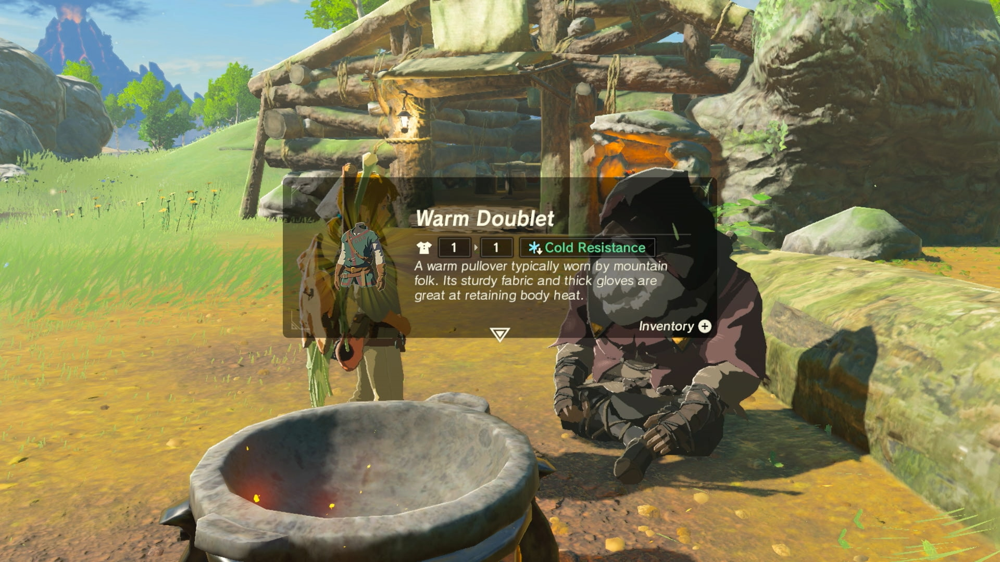

The Legend of Zelda: Breath of the Wild





Lançamento: Março de 2017
Plataformas: Nintendo Switch, Wii U
Características Principais
- Mundo Aberto: Explore um ambiente expansivo e interativo, repleto de montanhas, florestas e ruínas antigas.
- Liberdade de Exploração: Viaje por Hyrule a pé, a cavalo ou mesmo usando um paraglider. Cada área oferece segredos e desafios únicos.
- Sistema de Sobrevivência: Gerencie a saúde, a comida e o equipamento de Link, enquanto enfrenta inimigos e enfrenta as mudanças climáticas.
- Quebra-cabeças e Dungeons: Resolva quebra-cabeças em santuários e conquiste diversos desafios para fortalecer Link.
- Narrativa Imersiva: Descubra a história profunda e emocionante de Hyrule através de missões, encontros e memórias.
História
Em The Legend of Zelda: Breath of the Wild, você mergulha em uma Hyrule devastada por um evento catastrófico conhecido como "Calamity Ganon". O jogo começa com Link, o protagonista, despertando de um longo sono de 100 anos em um mundo em ruínas. Ele não se lembra de seu passado e logo descobre que Hyrule está sob a ameaça iminente de Ganon, uma entidade maligna que quase destruiu o reino.
Link, guiado pela voz da Princesa Zelda, deve explorar Hyrule para recuperar suas memórias e recuperar sua força. Ao longo de sua jornada, ele descobre a história de Hyrule e os eventos que levaram à sua destruição. A narrativa se desdobra através de memórias recuperadas, encontros com personagens variados e a exploração de santuários antigos.
Para derrotar Ganon e restaurar a paz, Link precisa unir forças com Zelda e os quatro campeões que uma vez combateram ao seu lado. Cada um desses campeões está associado a um dos grandes animais divinos espalhados pelo reino. Ao completar várias missões e desafios, Link fortalece sua posição e adquire habilidades essenciais para enfrentar Ganon e salvar Hyrule.